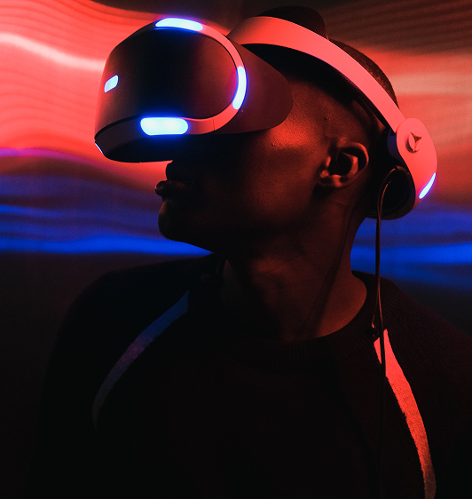

Neurographic Art: The Art of Transforming the Mind
Neurographica is a relatively new form of art that combines drawing with subconscious work. It is based on the principles of the brain's neuroplasticity and helps harmonize a person's inner state through the creation of unique graphic drawings. This method was developed by Russian psychologist Pavel Piskarev in 2014 as a technique for transforming thoughts and emotions through lines and shapes.
The Neurographica method was created by Russian psychologist Pavel Piskarev in 2014. It combines the principles of Gestalt therapy, cognitive psychology, and neuroaesthetics. Since then, it has gained popularity around the world.
Neurographica is based on a special technique of drawing lines that imitate natural neural connections in the brain. The lines should be smooth, unique, and free of sharp angles. This approach helps stimulate new neural pathways and encourages broader thinking.
Drawing with this technique influences the subconscious mind, allowing people to release inner emotions and experiences. During the creative process, negative thoughts and feelings are transformed into harmonious images, promoting relaxation and positive life changes.
The process consists of several key stages:
Defining a goal or identifying a problem.
Drawing neurographic lines on paper.
Smoothing the intersections and corners to create harmony.
Adding colors to enhance the emotional effect.
Completing the drawing and integrating the changes into one's mindset.
Research and practical experience suggest that Neurographica can help reduce stress, improve concentration, and boost creativity. People who practice this technique regularly often report better emotional well-being and the emergence of fresh ideas.
Neurographica can be used in many areas, including therapy, education, business, and personal development. It helps people discover creative solutions, overcome emotional challenges, and even improve relationships with others.
One of the greatest advantages of Neurographica is its accessibility. No artistic education or special drawing skills are required. The most important thing is to follow the basic principles and allow yourself to experiment freely.
The drawing process can be compared to meditation. It helps people relax, focus inward, and find emotional balance. It is an excellent way to cope with anxiety and discover inspiration in everyday life.
Neurographic art is much more than drawing. It is a method of transforming the way we think, helping people manage stress, achieve inner harmony, and unlock their hidden potential. Anyone who tries this technique can experience its positive impact on their life.
The drawing process can be compared to meditation. It helps people relax, focus inward, and find emotional balance. It is an excellent way to cope with anxiety and discover inspiration in everyday life.
The drawing process can be compared to meditation. It helps people relax, focus inward, and find emotional balance. It is an excellent way to cope with anxiety and discover inspiration in everyday life.
The drawing process can be compared to meditation. It helps people relax, focus inward, and find emotional balance. It is an excellent way to cope with anxiety and discover inspiration in everyday life.
Sed commodo aliquam dui ac porta. Fusce ipsum felis, imperdiet at posuere ac, viverra at mauris. Maecenas tincidunt ligula a sem vestibulum pharetra. Maecenas auctor tortor lacus, nec laoreet nisi porttitor vel. Etiam tincidunt metus vel dui interdum sollicitudin. Mauris sem ante, vestibulum nec orci vitae, aliquam mollis lacus. Sed et condimentum arcu, id molestie tellus. Nulla facilisi. Nam scelerisque vitae justo a convallis. Morbi urna ipsum, placerat quis commodo quis, egestas elementum leo. Donec convallis mollis enim. Aliquam id mi quam. Phasellus nec fringilla elit.
Nulla mauris tellus, feugiat quis pharetra sed, gravida ac dui. Sed iaculis, metus faucibus elementum tincidunt, turpis mi viverra velit, pellentesque tristique neque mi eget nulla. Proin luctus elementum neque et pharetra.
- 100 g of fresh leaves provides.
- Aliquam ac est at augue volutpat elementum.
- Quisque nec enim eget sapien molestie.
- Proin convallis odio volutpat finibus posuere.
Cras et diam maximus, accumsan sapien et, sollicitudin velit. Nulla blandit eros non turpis lobortis iaculis at ut massa.

ABOUT HYDRA VR
Eget mi proin sed libero enim sed faucibus turpis. Nisl rhoncus mattis rhoncus urna neque viverra justo. Vivamus at augue eget arcu dictum. Ultrices gravida dictum fusce ut placerat orci. Aenean et tortor at risus viverra adipiscing at in. Mattis aliquam faucibus purus in massa. Est placerat in egestas erat imperdiet sed. Consequat semper viverra nam libero justo laoreet sit amet. Aliquam etiam erat velit scelerisque in dictum non consectetur a. Laoreet sit amet cursus sit amet. Vel eros donec ac odio tempor orci dapibus. Sem nulla pha retra diam sit amet nisl suscipit adipiscing bibendum. Leo a diam sollicitudi n tempor.
LET’S GET IN TOUCH